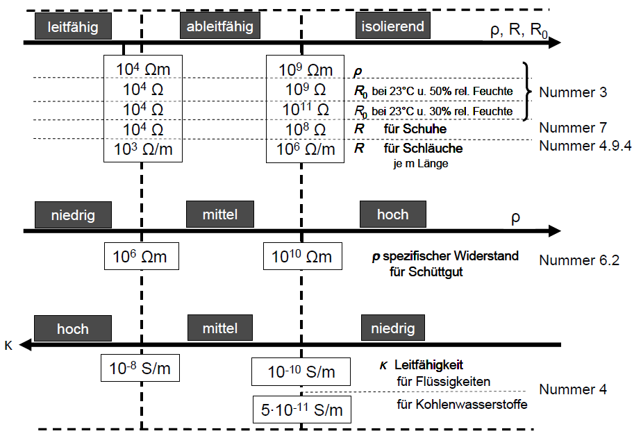

Elektrostatische Eigenschaften sind einer direkten Messung nicht zugänglich. Teils durch die historische Entwicklung, teils auch aus praktischen Gesichtspunkten werden für Medien in verschiedenen Aggregatszuständen und für einige Gegenstände unterschiedliche Messgrößen verwendet, um die Leitfähigkeit bzw. den elektrischen Widerstand zu charakterisieren.
| Feststoffe und Schüttgut | Flüssigkeiten | feste Materialien, Gegenstände und Einrichtungen |
| spezifischer Widerstand ρ (Ωm) | Leitfähigkeit κ (S/m) = 1/ρ | spezifischer Widerstand ρ (Ωm) Oberflächenwiderstand RO (Ω) Durchgangswiderstand RD (Ω) |
Die Einteilung, die den entsprechenden Abschnitten der Regel jeweils für die Bereiche „leitfähig“, „ableitfähig“ und „isolierend“ zu Grunde liegt, ist in der folgenden Übersicht zusammengestellt:
